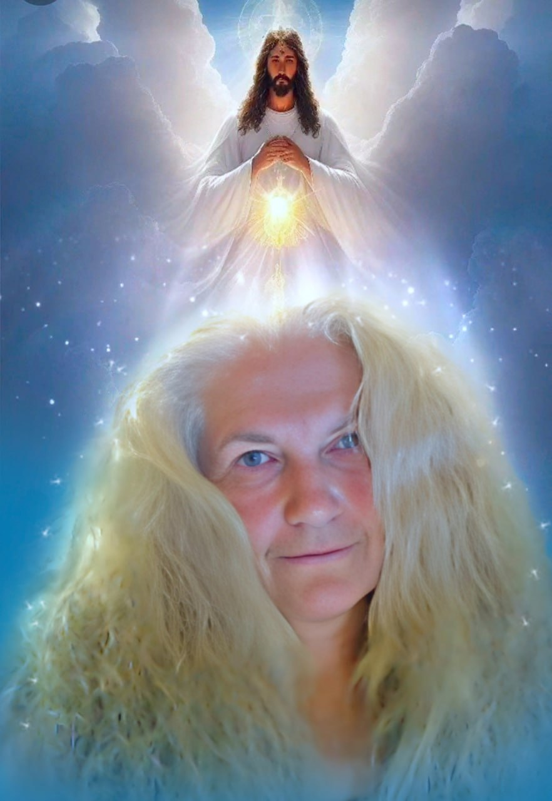

«И любить Его всем сердцем, и всем умом, и всею душею, и всею крепостью, и любить ближнего, как самого себя, есть больше всех всесожжений и жертв».
Евангелие от Марка, стих 33
«Где взять любовь, если ее нет?», – негромко проговорила она, пытливо посмотрев мне прямо в глаза.
Я улыбнулась)
Изначально ребенок всегда наивен, доверчив и добр. Сам по себе, злым, вряд ли кто-то хочет быть. С самого рождения человек наполнен любовью. И даже во взрослом состоянии это чувство ищет каждый из нас. Однако социум – жесткая и, порой, совсем не наполненная нежностью структура. Такое вот противоречие. Наше общество состоит из людей, каждый из которых полон любви. И одновременно с этим, социум состоит из людей, среди которых есть масса нелюбимых и недолюбленных. Ну и, как следствие, злых, раздраженных и… да, зависимых.
Почему так происходит? Потому, что человек в отношениях, как и в других своих проявлениях, существо развивающееся. А развитие – это всегда приобретение опыта. Как хорошего, так и плохого. Хороший опыт, где мы эмоционально в плюсе, делает наши будни ярче. Мы убеждаемся, что реальность интересна взаимодействиями. Плохой опыт, на самом деле не менее полезен, но он характеризуется как непозитивный. Он огорчает. И опыт отношений в первую очередь. Негативные эмоции ранят человека. И чем он чувствительнее, тем сильнее.
Разочарование и, как следствие, обиды – главные причины одиночества в любви.
Не все могут справиться с этим самостоятельно. Нужен психолог, психотерапевт, проводник или целитель. Людям неудобно демонстрировать отсутствие или крах отношений. Иногда человек не может признаться в этом даже самому себе, удерживая партнера, который его разрушает. При этом тот же самый человек может быть постоянно окружен людьми. Он может быть вовлечен во множество начинаний, может успешно контактировать в деловой сфере, чувствовать любовь близких или друзей, отвечать им взаимностью, но ощущать себя абсолютно одиноким, если речь заходит о второй половинке.
Итак, что получается? Взрослея, ребенок с грустью осознает, что не все его любят. И речь сейчас даже не о том, почему это происходит. Оно происходит. Кто-то способен идти дальше. Кто-то «закрывается» и надевает броню из «колючек» скептицизма, а иногда, даже цинизма. Внутренний диалог такого человека содержит, как правило, много вопросов из разряда «почему?», «за что?», «когда же уже?» и тому подобных.
В личных разговорах, женщины, как создания более эмоциональные, часто озвучивают этот внутренний диалог. С этими же вопросами они приходят ко мне. Дамы могут часами говорить о том, что их тревожит в отношении супруга. Они досконально разбирают его недостатки. Они снова и снова задают те самые вопросы и опять не находят на них ответов. Неудивительно – это сложная и длительная работа. В ответах зашифровано осознание пути в трансформацию отношений, в спокойствие. Ведь пространство Любви не может быть суетно. Женщина, находящаяся в поле истинной Любви немногословна, она излучает уверенность в том, что все непременно будет хорошо. И у нее действительно все будет хорошо – ее ведут Высшие Силы.
Любовь для каждого что-то свое. Для кого-то это взаимопонимание, для кого-то сочувствие и помощь, для кого-то совместные интересы, для кого-то все перечисленное вместе. Никто из людей не может дать точное определение этого чувства. Может потому, что оно имеет божественную природу. Любовь дает человеку максимальную наполненность. Это она подвигает его на свершения и достижения. Но не через силу, а в гармоничном принятии происходящего.
Любое беспокойство ума – это уже дисгармония, это недоверие к Богу. Как уже сказано выше, пространство Любви – пространство безмолвия и безмыслия. Отсутствие суеты и напряжения, как в поступках, так и в мыслях крайне важно. Так проявляется вера и доверие в то, что там, наверху, нас любят, направляют и оберегают.
«Но как же так?», – возражает мне жена зависимого. «Я доверяю Небу, верю во Всевышнего, но мой муж не прекращает изводить меня», – повторяет она.
Нет, не полностью доверяет). И, как следствие, не может стать источником комфорта его души. Дело в том, что отношение мужа – это зеркальное отражение отношения жены. Пьющий или наркозависимый мужчина – это больной человек, которому часто просто недостает любви и внимания. Крики, переживания и слезы, сострадание, а также терпение и жалость – это не Любовь. Любовь – чувство созидающее. Это не энергетическая заплатка психологической прорехи, вызванной разочарованиями.
Спасти своего мужчину может только женщина-творец. Творец, создающий для него пространство принятия и доверия. Ведь исправить можно многое. Главное – верить. Верить в мужа, верить самой себе, что можешь, верить в Творца и искренне доверять Ему. Ведь мы есть подобие его. А Любовь Бога к человечеству безусловна. Для него нет пропащих и плохих. Всевышний любит каждого, как собственное дитя, верит в него и дает шанс на исправление.
Иллюстратор Алексей Курбатов
Моя работа заключается в том, чтобы помочь женщине стать источником Любви. Порой это бывает нелегко. Мы не совершенны, мы просто люди. К тому же в данном случае мы испытываем эмоции, которые положительными назвать совсем нельзя. Семья зависимого страдает созависимостью. Это сложные судьбы, бесконечные трудности и постоянное ожидание проблем. Самое грустное, что подобное ожидание оправдывается потому, что все «спасения» близкого человека имеют лишь сиюминутный эффект. Рано или поздно все повторяется вновь. Нарушить этот алгоритм могут только изменения на психоэмоциональном и энергетическом уровне. И начинать женщине нужно с себя.
Я владею проверенными техниками и методиками пробуждения женщины. Да. Я работаю с мужчиной через его женщину. Это уникальный подход к вопросу зависимостей, не имеющий сбоев и побочных осложнений на психику. Так работают Любовь и заветы Всевышнего. Я лишь проводник замыслов Творца.
«Более же всего имейте усердную Любовь друг ко другу, потому что Любовь покрывает множество грехов».
1-е послание апостола Петра, глава 4 стих 8
Что происходит, когда женщина купирует причитания внутреннего диалога и предпочитает довериться Богу? Она расслабляется, отпускает психологические «якоря» ожиданий и доверяется Небу. Она становится гармоничной. Она чувствует Любовь Бога и наполняется ею. Она понимает, что способна не только принимать эту божественную Любовь, но и дарить ее своему мужу. Ведь Любовь Всевышнего неиссякаема. Женщина сама становится воплощением этого чувства. Не только духовно. Это, безусловно, сказывается и на внешнем виде. Черты лица смягчаются, морщинок становится меньше, телесные блоки уходят – женщина становится гибче. Меняется и биохимия внутренних процессов – происходит полное обновление организма. Ведь фраза «все болезни от нервов» отнюдь не пустой звук. И так как внутреннее равно внешнему, она видит Творца не только в себе, но теперь и в своем муже. Она не ошибается. Любовь наполняет их дни смыслом, заботой друг о друге, дружбой и нежностью – Любовь становится их жизнью. Зависимость отступает. Потому, что в пространстве любви нет ни причин, порождающих зависимости, ни следствий, которыми они и являются.
Сказка?) Мы можем попробовать. Я помогу тебе.
Но ты вольна поступить и иначе. Ты можешь попробовать и дальше жить так, как жила.
Любовь – это не то, к чему принуждают). Счастье, кстати, тоже.
Но, если хочешь, чтобы в твоей семье Любовь стала твоей жизнью, пиши мне в ВКонтакте.
Возвращаясь к вопросу своей клиентки «где взять любовь, если ее нет?», отвечу просто и кратко «ты – это и есть Любовь». Но думаю, подробнее и понятнее будет вот так, как я тебе рассказала.
Жду тебя.
Тамара Шомина – твой проводник в Любовь.

Тамара Шомина
Твой проводник в любовь Тамара Шомина.
13.09.2024